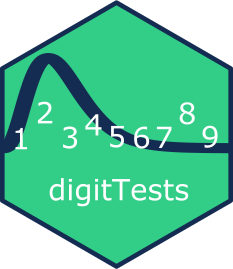

digitTests.Rd
digitTests is an R package providing tests for detecting irregular data patterns.
The package and its analyses are also implemented with a graphical user interface in the Audit module of JASP, a free and open-source statistical software program.
| Koen Derks (maintainer, author) | <k.derks@nyenrode.nl> |
Please use the citation provided by R when citing this package.
A BibTex entry is available from citation("digitTests").
Useful links:
The issue page to submit a bug report or feature request.
# Load the digitTests package library(digitTests) ############################################ ### Example 1: Benford's Law #### ############################################ data('sinoForest') distr.test(sinoForest$value, check = 'first', reference = 'benford')#> #> Digit distribution test #> #> data: sinoForest$value #> n = 772, X-squared = 7.6517, df = 8, p-value = 0.4682 #> alternative hypothesis: leading digit(s) are not distributed according to the benford distribution.################################### ### Example 2: Repeated Values #### ################################### data('sanitizer') rv.test(sanitizer$value, check = 'lasttwo', method = 'af', B = 1000)#> #> Repeated values test #> #> data: sanitizer$value #> n = 1600, AF = 1.5225, p-value = 0.003 #> alternative hypothesis: average frequency in data is greater than for random data.